Chapter Two
Volcano
Where the island is still being born
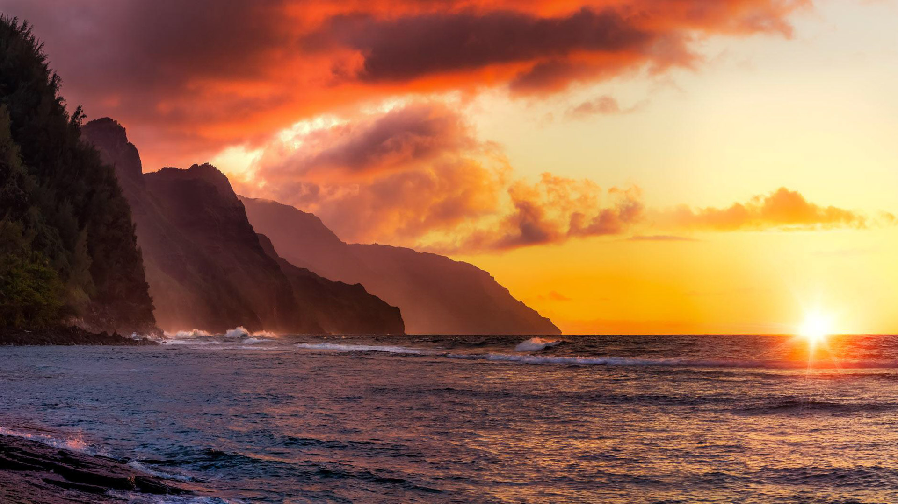
Two weeks. Two islands. A honeymoon built around the things that matter to us — not resort pools and umbrella drinks, but the real Hawai'i. The oldest rainforests in the archipelago. Reefs where spinner dolphins hunt at dawn. Temples where refugees were granted sanctuary a thousand years ago. The darkest skies in the Northern Hemisphere. A waterfall you sleep beside.
This is a trip that moves at our pace. Some days we'll snorkel a bay that Captain Cook never left. Other days we'll eat malasadas in a village and do nothing else by noon. Every base has enough depth to fill a week, and we have the freedom to follow whatever pulls us on a given morning.
What follows is not an itinerary — it's a map of possibilities. Four places to stay, and the wonders within reach of each one. We'll figure out the calendar together. For now, just look.
Big Island first, then Kaua'i — coast to volcano to cloud forest to garden isle
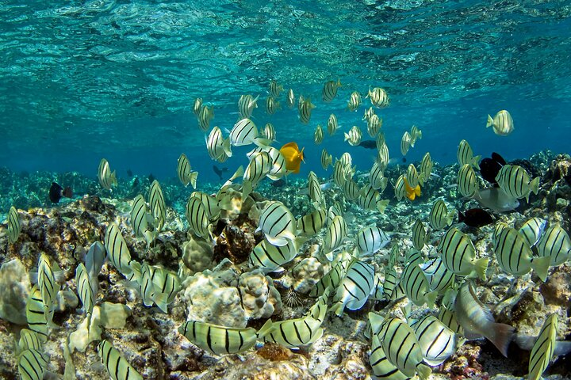
The Kona coast is the dry, sun-drenched western shoulder of the Big Island — black lava fields tumbling into water so clear you can see the reef from the road. South of the tourist strip, the coast gets quieter and older. Coffee farms terrace the hillsides. Stone walls mark boundaries set by Hawaiian kings. The water turns from blue to impossible turquoise where the reef begins.
This is where we start, and it's where the ocean days live. Kealakekua Bay — where Captain Cook met his end in 1779 — has one of the most pristine reefs in the main Hawaiian islands, accessible by outrigger canoe with guides who know the cultural history as well as the marine biology. Spinner dolphins feed here at dawn. Sea turtles rest on the rocks at midday.
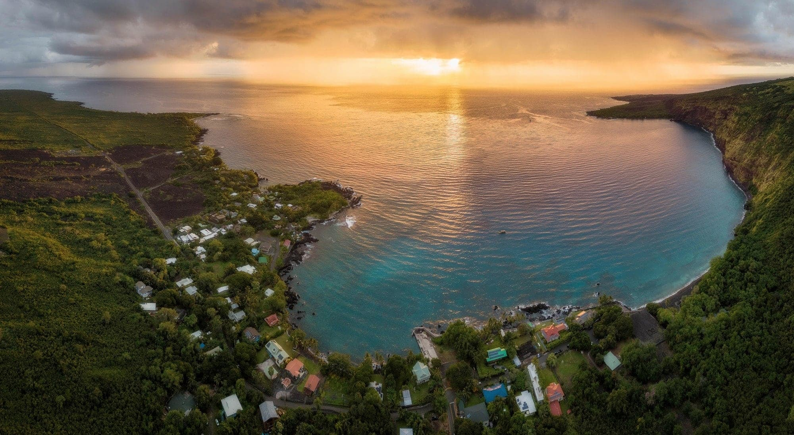
Culturally trained guides from Kona Boys paddle you across the bay in a traditional Hawaiian outrigger canoe, then guide you through a reef where spinner dolphins, manta rays, and green sea turtles are residents, not visitors. The bay is a marine sanctuary — no motorized boats allowed in the snorkeling zone.
4.5 hours · small groups
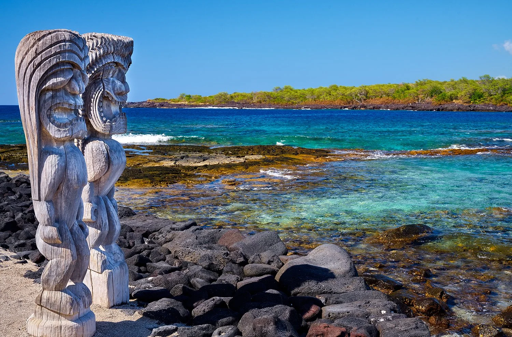
In ancient Hawai'i, anyone who broke a kapu — a sacred law — faced death. But if you could reach the walls of Pu'uhonua o Hōnaunau before you were caught, you were granted complete absolution. Warriors, defeated soldiers, and civilians all fled here. The great wall still stands, ten feet high and seventeen feet thick. The carved wooden ki'i still guard the temple platform, facing the sea.
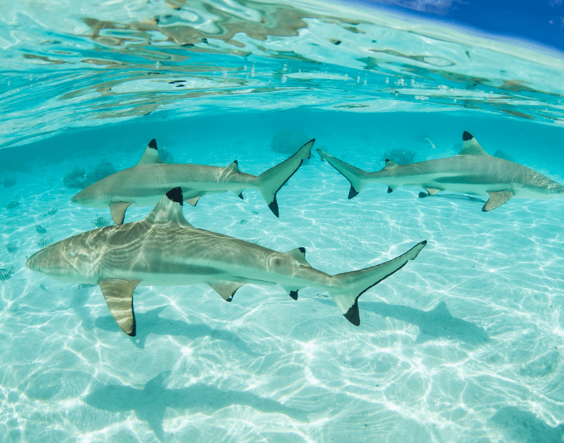
Three miles off the Kona coast, in deep blue water, a small boat anchors and you slip in. No cage. No scuba certification needed. Galapagos sharks, sandbar sharks, and oceanic whitetips cruise the open water around you while a marine naturalist guides the encounter. Maximum six people in the water. Julia — the boat is lovely too.
Kona Shark Diving · max 6 in the water
In the evenings, we eat like the coast lives — slowly and well. Laulau steamed for ten hours in ti leaves at a roadside stand that was on The Best Thing I Ever Ate. Poke so fresh the fishermen are still unloading when you order. And one night, a drive up the coast to the Four Seasons Hualalai, where the NOIO sushi lounge serves an omakase-caliber dinner sourced from 160 local farms — our one true splurge dinner on the Big Island.
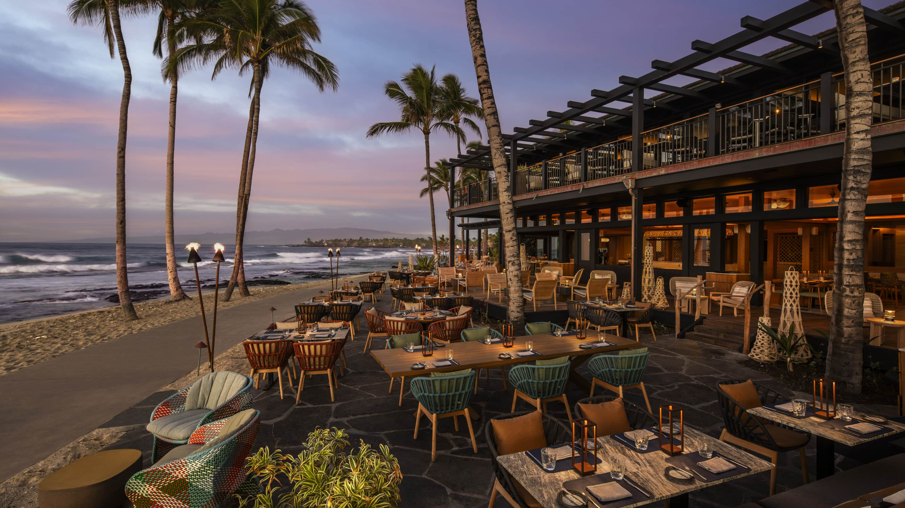
From the coast you drive uphill through coffee country, through cloud forest, and into something that doesn't look like Hawai'i at all — it looks like the moon. Hawai'i Volcanoes National Park sits on the summit of Kīlauea, one of the most active volcanoes on Earth. The caldera steams. The Chain of Craters Road descends through decades of eruption, each lava flow dated and labeled, until it dead-ends where the 2003 flow swallowed the pavement.
You'll spend a full day here, maybe two. But the real surprise is what grows in the cracks.
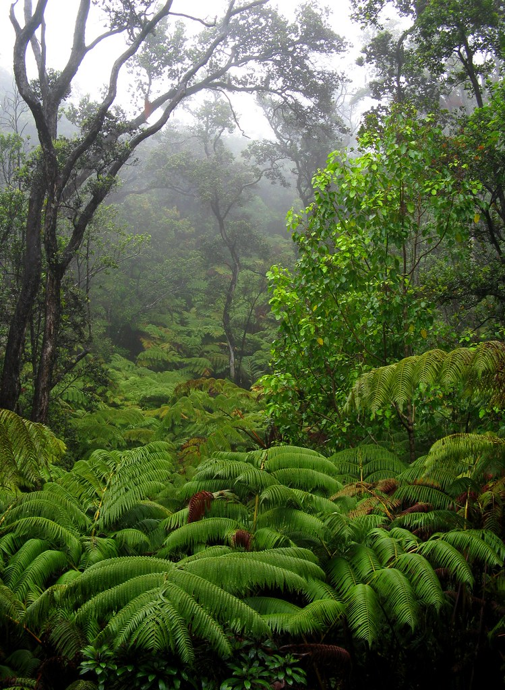
A "kipuka" is an island of old forest surrounded by newer lava flows — evolution's experiment in isolation. This one holds some of the most diverse native forest remaining in Hawai'i. Giant koa and 'ōhi'a, native ferns, and endemic birds that exist nowhere else on Earth.
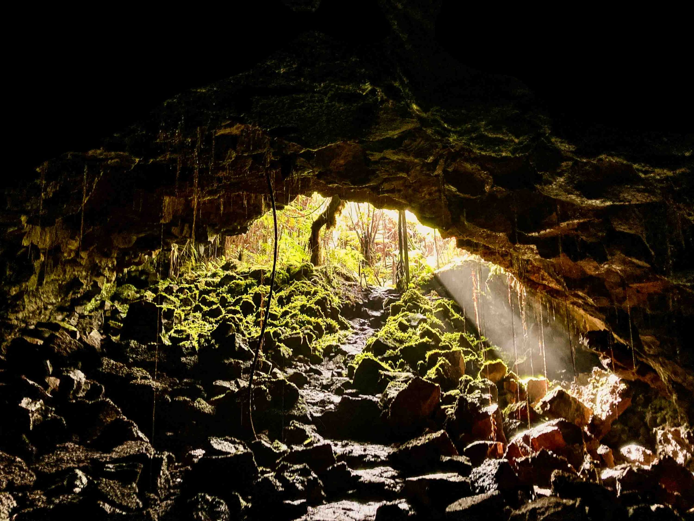
The longest lava tube on Earth — 40.7 miles of tunnel formed by a single eruption 500 years ago. A guided tour takes you into a world of lava stalactites, flow ripples frozen in stone, and 74 species of troglobites — cave-adapted creatures found nowhere else, including eyeless spiders and translucent crickets.
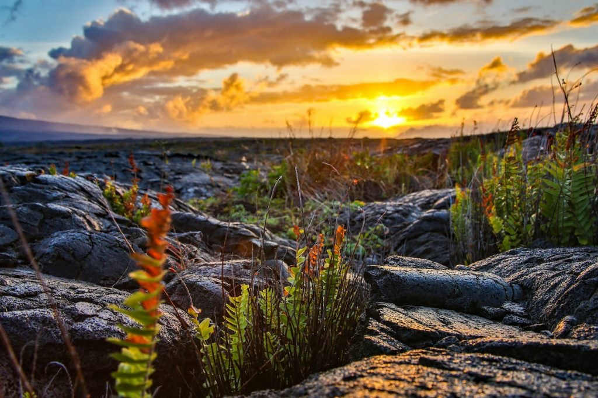
A 19-mile drive that descends 3,700 feet from the summit to the sea, through a landscape of raw creation. Each lava flow is a different year, a different texture. At the bottom, where the road simply ends, the Hōlei Sea Arch stands carved by waves from a cliff of solidified lava.
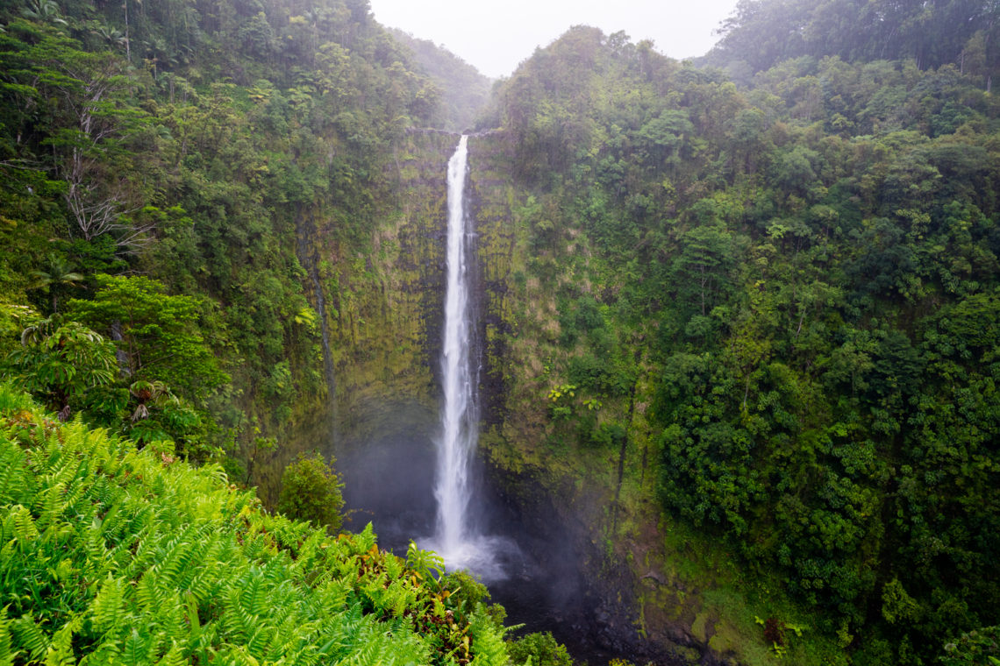
The windward side of the Big Island is another world entirely — wet, green, and wild. Hilo is a sleepy, unpretentious town where it rains almost every day and nobody minds. Waterfalls pour off every cliff. The farmers market is one of the best in the state. And from here, two of the most extraordinary experiences on the trip become possible.
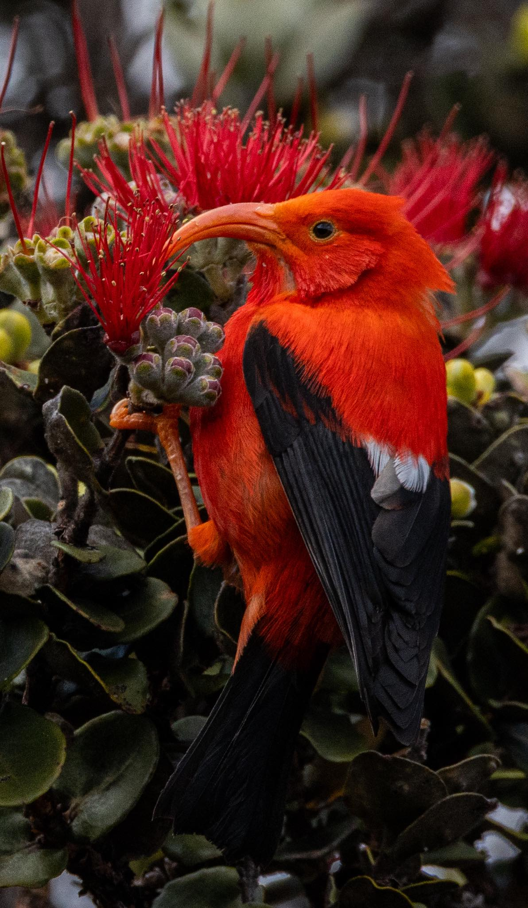
A National Wildlife Refuge on the slopes of Mauna Kea, closed to the public except by permitted guide. Jack Jeffrey — the retired USFWS biologist who managed the refuge for decades — picks you up before dawn and drives you into one of the last intact Hawaiian rainforests. 'I'iwi, 'apapane, Hawai'i 'ākepa, Hawai'i creeper, 'akiapōlā'au — birds that exist here and almost nowhere else, in forest that looks the way all of Hawai'i once did.
Private tour · pickup from Hilo lodging · 5:30 AM start
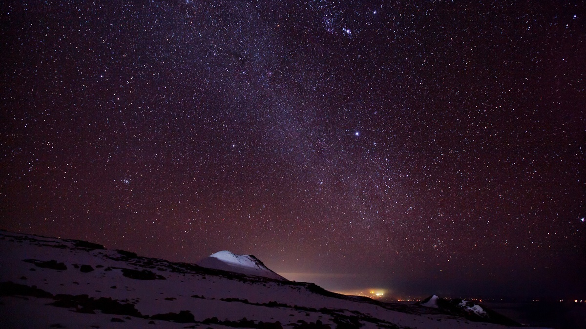
At 13,796 feet, above 40% of Earth's atmosphere and almost all of its water vapor, Mauna Kea has some of the darkest, clearest skies in the Northern Hemisphere. We'll time our visit to the September 11 new moon — no moonlight, maximum stars. The Milky Way resolves into individual suns. The Visitor Information Station at 9,200 feet runs a free nightly stargazing program with laser-guided constellation tours and research-grade telescopes.
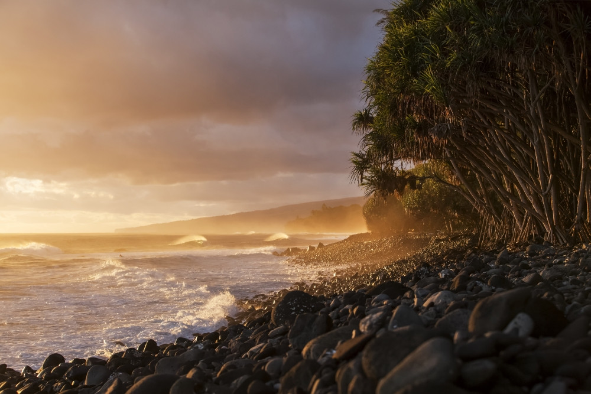
From the youngest island to the oldest.
From fire to garden.
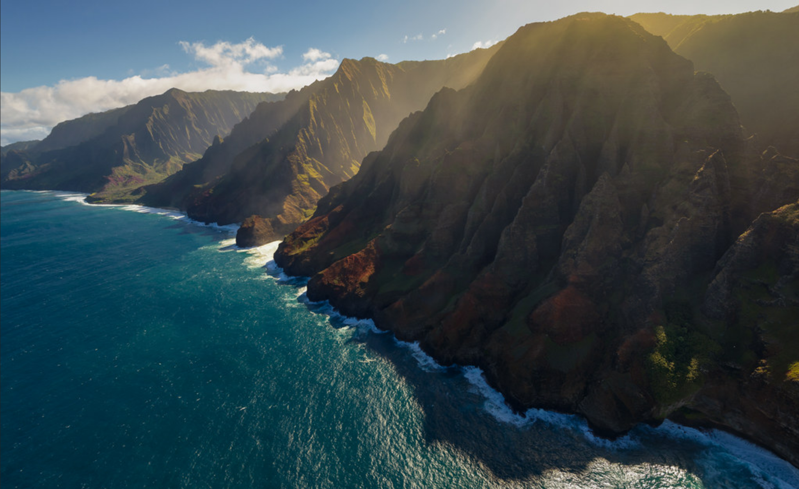
Kaua'i is five million years old — the eldest of the main islands, eroded into impossible shapes by millennia of rain. Where the Big Island is stark and volcanic, Kaua'i is soft and overgrown. Mountains dissolve into waterfalls. Valleys are so deep and green they look computer-generated. The Na Pali coast is a cathedral of stone and ocean that no photograph fully captures.
We'll base ourselves on the North Shore — Kilauea, near the lighthouse and the seabird sanctuary — and fan out from there. South to botanical gardens, west to Waimea Canyon, and always back to the quiet green coast where the road ends and the cliffs begin.
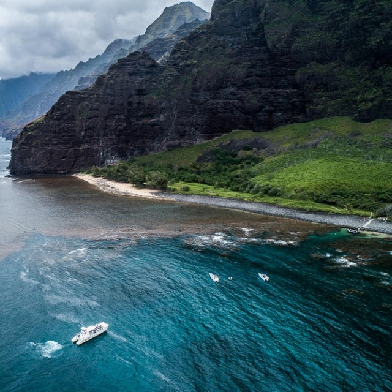
A seven-hour voyage that covers 90 nautical miles — the full Na Pali coast, then across the channel to the Forbidden Island of Ni'ihau and Lehua Crater, a rat-free seabird sanctuary. Laysan albatrosses, monk seals, snorkeling in 100-foot visibility water. Voted the #1 boat tour in America.
Holo Holo Charters · 7 hours · departs Port Allen
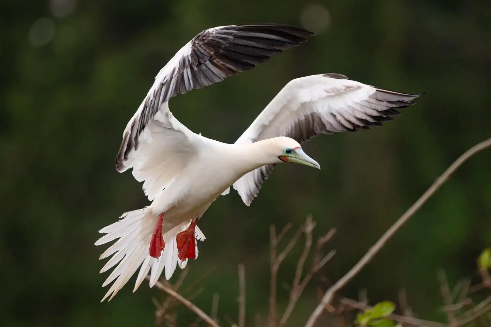
A headland jutting into the open Pacific, home to nesting Laysan albatrosses with six-foot wingspans, red-footed boobies, great frigatebirds, and nēnē — the Hawaiian state bird. The 1913 lighthouse stands on the cliff edge. Five minutes from our front door.
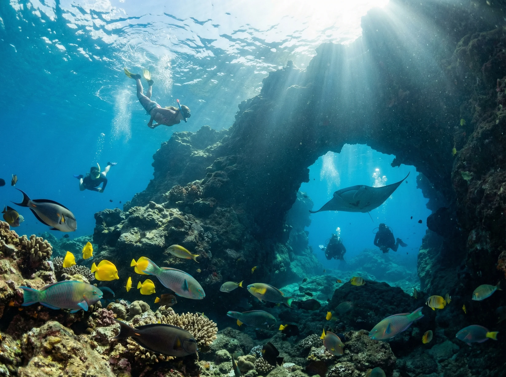
One of the best walk-in reef snorkeling spots in Hawai'i — a large, shallow reef right off the sand, with sea turtles, tropical fish, and water so clear the reef casts shadows on the sand below it. September is ideal: calm seas, warm water, fewer people than summer.
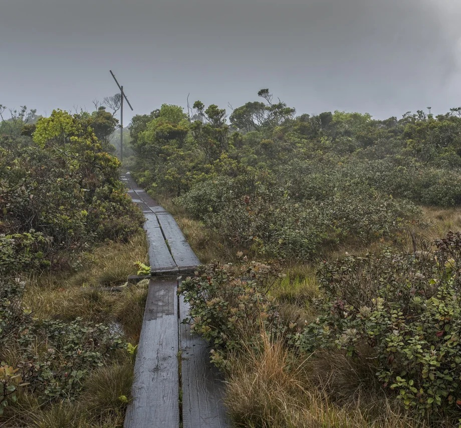
A fog-soaked montane bog at 4,000 feet — the highest swamp in the world, and the last refuge of Kaua'i's endangered honeycreepers. A boardwalk winds through dripping 'ōhi'a forest to the Kilohana Lookout, where the clouds part to reveal the Na Pali valleys from above. We'll hike in before dawn for a chance to hear some of the rarest birds on earth.
The dining on Kaua'i is quieter than the Big Island but no less rewarding. Bar Acuda in Hanalei — Mediterranean tapas built from whatever the North Shore fishermen brought in that day — is the best dinner on the island. A Robuchon-trained chef hosts intimate five-course dinners on an ocean-view lanai in Poipu. And every morning starts at a bakery in Kilauea that makes poi malasadas from taro grown in the valley below.
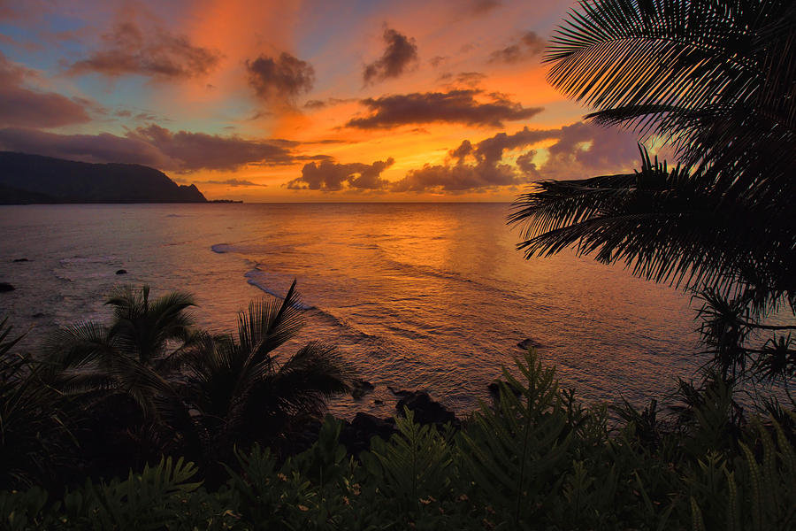
Five places, two islands, fourteen nights. Each one chosen for a reason.
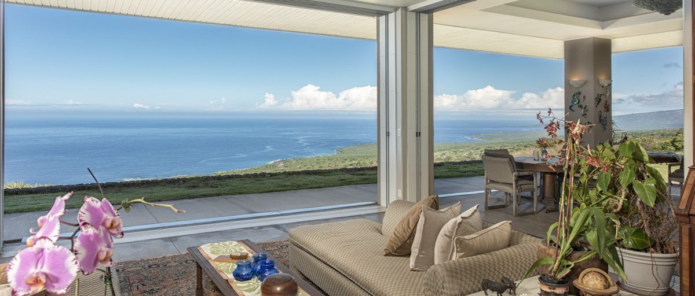
Forty acres of the McCandless Ranch at 1,100 feet, with ocean views that stretch past the horizon. Four suites, full breakfast on the lanai, an infinity pool that seems to pour into the Pacific. Hosts Clem and Angus have made this one of the most beloved small properties in all of Hawai'i. Our home base for Kealakekua Bay, the Place of Refuge, and the coffee country.
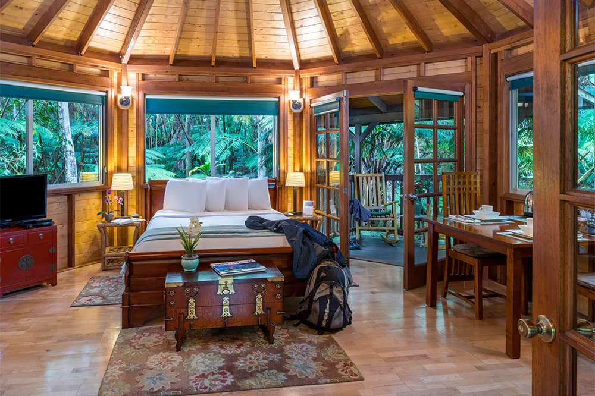
Five suites in a rainforest setting, two miles from Hawai'i Volcanoes National Park. Cedar-paneled rooms with fireplaces, private lanais, wine and cheese at sunset. Native birds in the garden, tree ferns outside the window, and the glow of Halema'uma'u crater under the new moon. Three nights to disappear into the cloud forest.
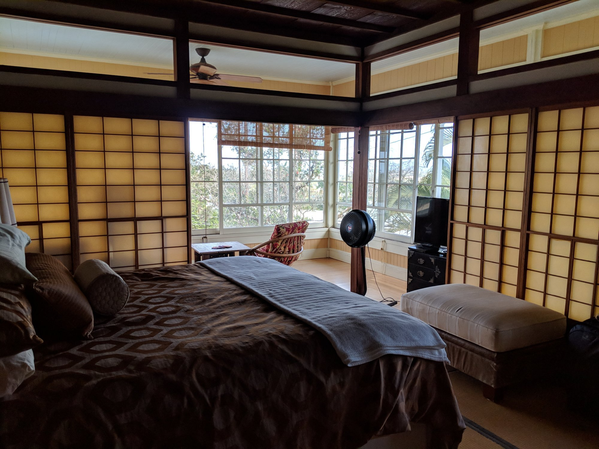
The Samurai Suite: ryokan-style design with panoramic Hilo Bay views. One night of quiet intentionality between the volcano and the flight to Kaua'i, with Mauna Kea stargazing under a nearly-new moon and the old town of Hilo to explore.
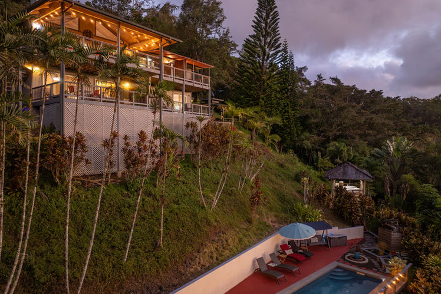
A classic bed and breakfast on a hillside overlooking the sacred Lawai Valley — the Valley of Compassion — where warriors once came to heal. The property borders the National Tropical Botanical Garden, and breakfast is a gourmet affair on the lanai with valley views and birdsong. Our base for botanical gardens, south shore snorkeling, and a pre-dawn expedition to the Alaka'i Swamp to find the last honeycreepers.
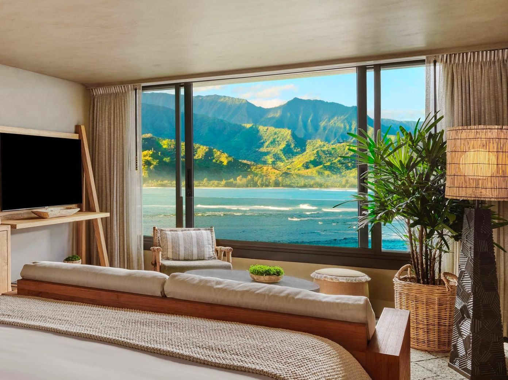
The finale. A clifftop perch above Hanalei Bay — one of the most beautiful bays in the world — with the green mountains of the Na Pali coast beyond. Sunset cocktails on the ninth-floor terrace, the honeymoon dinner at Bar Acuda, and two last mornings in paradise before we fly home.
Two islands, two weeks, one us. Everything here is a possibility, not a schedule. We'll build the days together, follow the weather, follow our moods, and eat our weight in poke along the way.